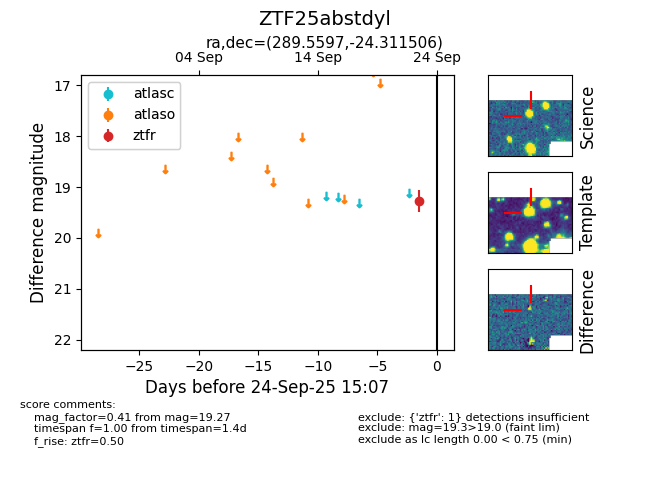

FINK: ZTF25abstdyl
Lasair: ZTF25abstdyl
ALeRCE: ZTF25abstdyl
ZTF25abstdyl (ztf,fink)
equatorial (ra, dec) = (289.5597,-24.31151)
galactic (l, b) = (13.5777,-16.40099)

last ztfr=19.27
1 ztfr detections